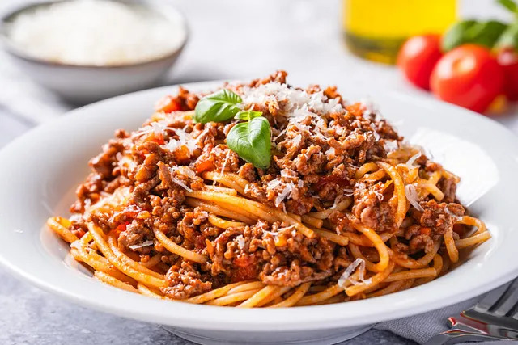

Spaghetti Bolognese - Rezept
Vorwort
Dies ist das Rezept für Pepi's Spaghetti Bolognese. Achtung es fehlen jegliche Mengenangaben, da ich dieses Rezept nach Gefühl koche.

Zutaten
- Rinderfaschiertes
- Scheine Bauchfleisch
- Zwiebeln
- Knoblauch
- Karotten
- Sellerie
- Tomatenmark
- Tomaten
- Gewürze
- Parmesanrinde
- Dunkle Kochschokolade
- Spaghetti
Zeit
Die gesamte Zubereitung dauert 3,5+ Stunden. Wovon 3h die Sauce köchelt.
Zubereitung
- Zwiebeln, Knoblauch, Karotten und Sellerie klein schneiden und mit etwas Öl auf mittlerer Hitze anbraten. Am besten nehmen wir hierfür einen großen Topf, da wir später darin alles zusammen zur Soße verarbeiten werden.
Die Zwiebeln sollen glasig werden, die Karotten und der Sellerie sollen bissfest bleiben. Dies dauert ca. 8-15 Minuten, abhängig davon wie fein vorher geschnitten wurde.
Wir nehmen nun das ganze Gemüse aus dem Topf und geben es in einen separaten Behälter.
- Rinderfaschiertes in den gerade verwendeten Topf geben.
Wir braten das Fleisch zuerst auf mittlerer Hitze und erhöhen die Hitze sobald das Fleisch Wasser lässt.
Dabei immer wieder mit einem Holzlöffel das Fleisch zerkleinern, damit es gleichmäßig brät.
Sobald das Wasser abgekocht ist, schauen wir nach, ob das Fleisch gut angebraten ist. Es soll eine goldenbraune Färbung haben.
Dies nennt man auch "Maillard-Reaktion". Jetzt können wir die Hitze wieder reduzieren.
Nun geben wir den klein geschnittenen Schweinbauch hinzu. Wir braten ihn solange bis das Fett vom Fleisch sich mit dem Faschierten vermengt.
Man kann hier nun auch mit etwas rotem Wein ablöschen und darin köcheln lassen.
- Tomatenmark hinzufügen und kurz mit anrösten.
- Tomaten und restliches Vorgekochtes Gemüse hinzufügen und alles gut verrühren. nachdem die Tomaten verkocht sind etwas Wasser hinzufügen, sodass alles gut bedeckt ist.
- Parmesanrinde und dunkle Kochschokolade hinzufügen.
- Gewürze nach Geschmack hinzufügen. (Ich empfehle Salz, Pfeffer, Loorbeerblätter und Muskatnuss)
- Die Sauce bei niedriger Hitze köcheln lassen, bis sie dickflüssig ist. (Mindestens 3h kochen lassen, je länger es kocht, desto besser wird die Sauce)
- In der Zwischenzeit Spaghetti kochen.
- Die fertige Sauce über die Spaghetti geben und mit Parmesan servieren. (bitte ohne der Parmesanrinde und den Loorbeerblättern)
Weitere Rezepte: